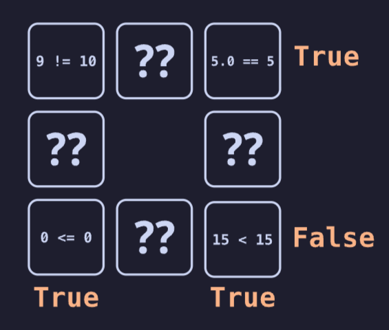
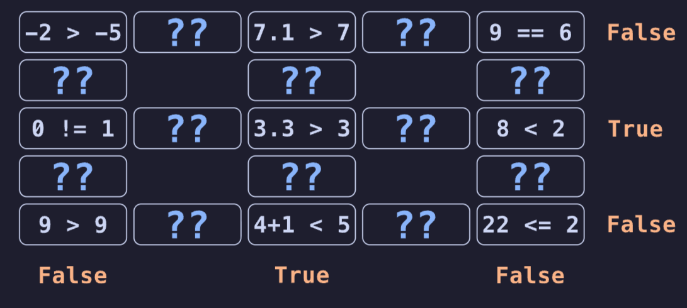

Bombastic Booleans
Fred Agbo & Jed
September 9, 2026
Welcome to week 3!
- Class grouping today: Scan the QR code or go to https://tools.jedrembold.prof/daily
- Class code is
lcjjHj - Introduce yourselves! Fun question: What is your favorite riddle about liars/truth-tellers?

Quick Announcements
- Problem Set 2 published and due on Monday Sept 14!
- All problems should be approachable after today
- Sections today or tomorrow! Don’t forget!
Group Problems
Problem 1: Reviewing Functions
Examining the code to the right, what is the returned value if I
evaluate the expression func2(1,5)?
def func1(x):
for i in range(3):
x *= 2
return x + x
def func2(y, z):
A = func1(y+1) % 8
z, A = A + z, y
return z ** AProblem 2: The Boolean Expression
What would the below expression evaluate to?
True and not False or False and not (False or True or False) or False
Please Note the Order!
- This may be left out in the video…
- Boolean operators absolutely have an order of operations:
- Parentheses
notandor
- Only operations at the same “level” act left to right
Problem 3: Gridded Booleans
- The grid to the right shows several comparison expressions, along with placeholders for unknown boolean operations
- It also shows a target result for each row and column
- Your task is to fill in the missing boolean operators to ensure all rows and columns evaluate to their desired target

Problem 3b: Raising the Stakes

Problem 4: Being Smart
- Suppose you are writing a function to “control” a thermostat for an HVAC system
- Your function has two variables as input:
current_tempandtarget_temp- If the two values are within 5 degrees, you should print “Off”
- If the current temperature is less than the target, you should print “Heating”
- If the current temp is greater than the target, you should print “Cooling”
- If they are separated by more than 25 degrees, you should
also print “Warning: High Load!”
- This is in addition to whichever of the three values you printed above
Live-Coding
Multiples
- I want to write a function that takes a given number as input and
prints all of its integer factors
- As a reminder, a factor of a number is a value that evenly divides the number
- I want to return a count of how many factors were printed
A Solution
def print_factors_of(num):
"""Prints off all the integer factors of
the provided number, and returns the count of
them.
Algorithm:
Loop over all numbers less than num
Check if factor by seeing if remainder is 0
Print and increment counter if so
"""
possible_factor = 1
count = 0
while possible_factor <= num:
if num % possible_factor == 0: # Factor found!
print(possible_factor)
count += 1
possible_factor += 1
return count
print(print_factors_of(45632636))